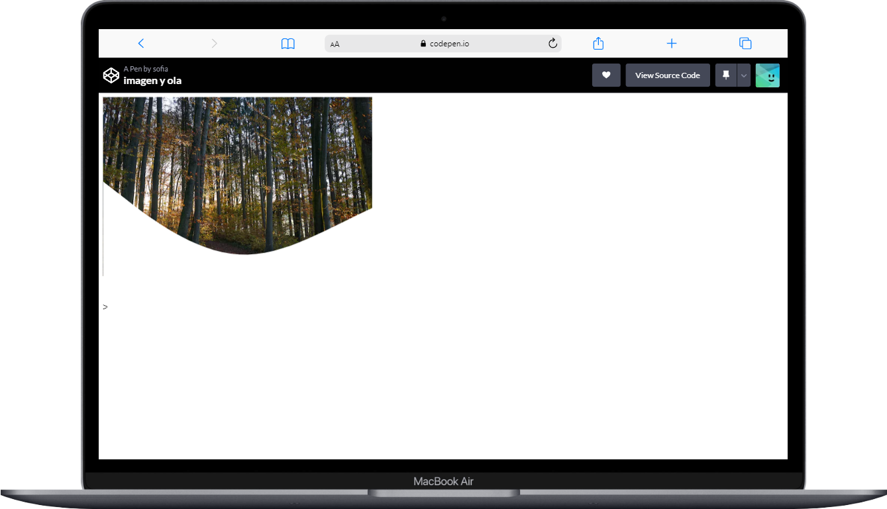
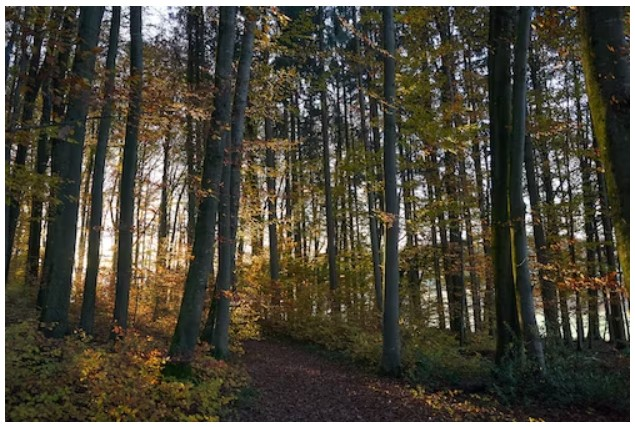
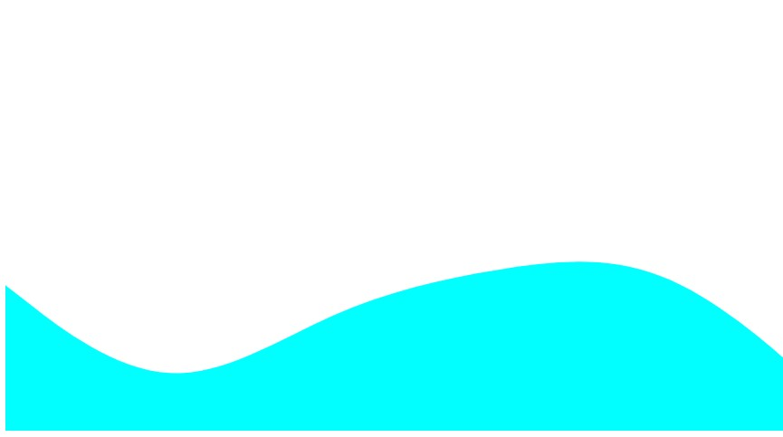
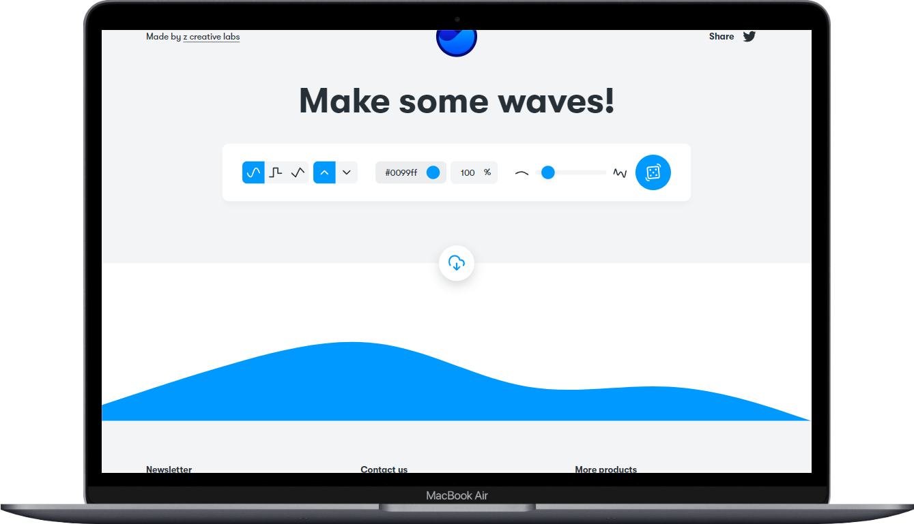
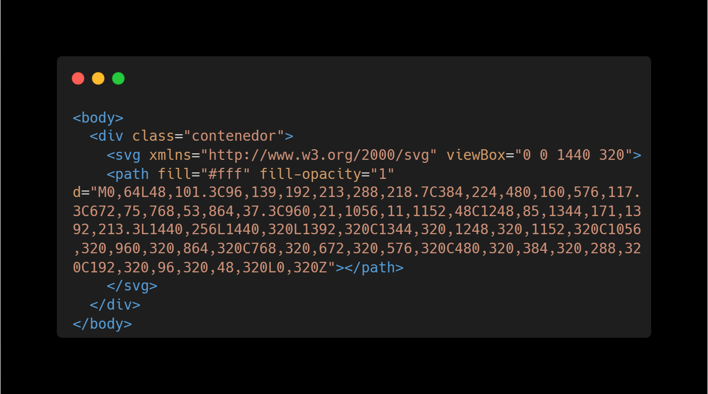
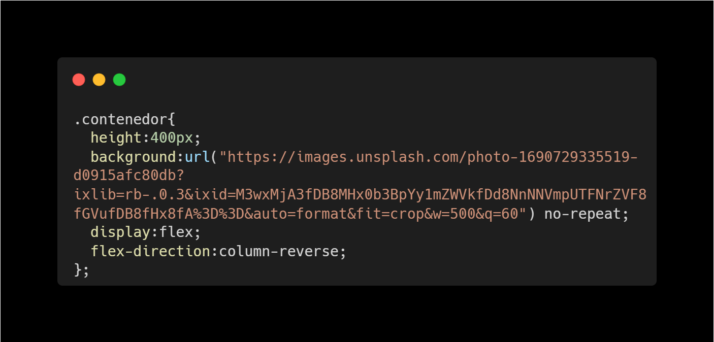

Uso de un SVG sobre una imagen
Para este ejercicio se pide hacer una cabecera como la que se muestra a continuación:
Para este ejemplo utilizaremos el generador de olas de Get Waves. Este generador nos permite configrar unos parámetros como: el tipo de ola (redonda, en pico o cuadrada), el color de la ola, asi como si se quiere mayor o menos números de olas
La imagen de la previsualización está formada por dos elementos la imagen de fondo que se ha insertado desde css con la propiedad de background-image y la "ola" que en este caso una una etiqueta svg (etiqueta de HTML5) que se ha obtenido de Get Waves.En este punto destacar que la ola es del color del fondo de la web para dar ese efecto de recorte.
 En caso que del ejemplo se trata de una imagen Unsplash y la ola obtenida de la web de Get Waves
Cuando tenemos los dos elementos (la imagen y la etiqueta). Pasamos al código que en este caso queda así para el html y el css:
 Puedes visualizar este ejemplo: Ver en CodePen.io